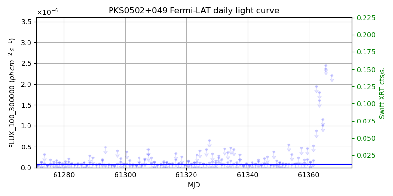
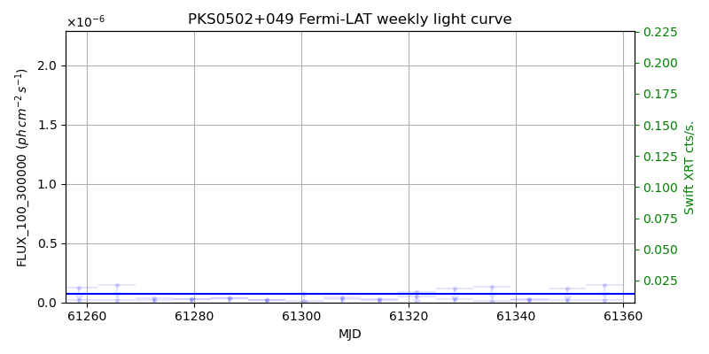

LAT Lightcurve site: https://fermi.gsfc.nasa.gov/ssc/data/access/lat/msl_lc/source/PKS_0502p049
Swift site: https://www.swift.psu.edu/monitoring/source.php?source=PKS0502+049
NED: Query
Time of last update of this page: UT: 2026-11-20 16:15 (MJD: 61364.678)
| Property | Value |
|---|---|
| R.A. | 5:05:23.28 |
| Dec. | 4:59:42.0 |
| z | 0.954 |
| 3FGL SpectrumType | LogParabola |
| 3FGL PL Index | |
| 3FGL Flux_100_300000 | 7.35e-08 1 / (s cm2) |
| 3FGL Flux_1000_300000 | 2.95e-09 1 / (s cm2) |
| 3FGL Flux >200 GeV | 7.78e-14 1 / (s cm2) |
| 3FGL Extrap. Crab >200 GeV | 0.00 |
| 3FGL Flux After EBL Absorption >200GeV | 2.21e-15 1 / (s cm2) |
| 3FGL EBL Crab Fraction >200GeV | 0.00 |

| MJD | dMJD | Flux | dFlux | Frac3FGL | FracCrab>200GeV | EBLFracCrab>200GeV |
|---|---|---|---|---|---|---|
| 61361.50 | 0.50 | 1.78e-07 | 0.00e+00 | 0.00 | 0.00 | 0.00 |
| 61362.50 | 0.50 | 1.95e-06 | 0.00e+00 | 0.00 | 0.00 | 0.00 |
| 61362.50 | 0.50 | 8.74e-07 | 0.00e+00 | 0.00 | 0.00 | 0.00 |
| 61363.50 | 0.50 | 1.81e-06 | 0.00e+00 | 0.00 | 0.00 | 0.00 |
| 61363.50 | 0.50 | 1.61e-06 | 0.00e+00 | 0.00 | 0.00 | 0.00 |

| MJD | dMJD | Flux | dFlux | Frac3FGL | FracCrab>200GeV | EBLFracCrab>200GeV |
|---|---|---|---|---|---|---|
| 61342.50 | 3.50 | 2.57e-08 | 0.00e+00 | 0.00 | 0.00 | 0.00 |
| 61349.50 | 3.50 | 1.14e-07 | 0.00e+00 | 0.00 | 0.00 | 0.00 |
| 61349.50 | 3.50 | 1.83e-08 | 0.00e+00 | 0.00 | 0.00 | 0.00 |
| 61356.50 | 3.50 | 2.06e-08 | 0.00e+00 | 0.00 | 0.00 | 0.00 |
| 61356.50 | 3.50 | 1.47e-07 | 0.00e+00 | 0.00 | 0.00 | 0.00 |
| MJD | dMJD | Flux | dFlux | Frac3FGL | FracCrab>200GeV | EBLFracCrab>200GeV |
|---|---|---|---|---|---|---|
| 61361.50 | 0.50 | 3.52e-08 | 0.00e+00 | 0.00 | 0.00 | 0.00 |
| 61362.50 | 0.50 | 8.57e-08 | 0.00e+00 | 0.00 | 0.00 | 0.00 |
| 61362.50 | 0.50 | 9.25e-08 | 0.00e+00 | 0.00 | 0.00 | 0.00 |
| 61363.50 | 0.50 | 5.20e-07 | 0.00e+00 | 0.00 | 0.00 | 0.00 |
| 61363.50 | 0.50 | 2.32e-07 | 0.00e+00 | 0.00 | 0.00 | 0.00 |

| MJD | dMJD | Flux | dFlux | Frac3FGL | FracCrab>200GeV | EBLFracCrab>200GeV |
|---|---|---|---|---|---|---|
| 61342.50 | 3.50 | 9.69e-09 | 0.00e+00 | 0.00 | 0.00 | 0.00 |
| 61349.50 | 3.50 | 3.11e-09 | 0.00e+00 | 0.00 | 0.00 | 0.00 |
| 61349.50 | 3.50 | 6.52e-09 | 0.00e+00 | 0.00 | 0.00 | 0.00 |
| 61356.50 | 3.50 | 2.91e-09 | 0.00e+00 | 0.00 | 0.00 | 0.00 |
| 61356.50 | 3.50 | 3.76e-09 | 0.00e+00 | 0.00 | 0.00 | 0.00 |
--------------------------------------------------------- Using user-supplied coords: 5:05:23.28 4:59:42.0 2000 --------------------------------------------------------- FLWO UT night of: 2026-11-21 Local Sid. @ Midnight: 03:37 Sunset (-15.0) (local, UT): 18:33 01:33 Sunrise (-15.0) (local, UT): 05:47 12:47 Moonrise (local, UT): Moonset (local, UT): 03:40 10:40 Moon phase: 0.85 --------------------------------------------------------- AzTime LSID UT Obj_el Obj_az Mn_el Mn_az Sep. --------------------------------------------------------- 18:33 22:09 01:33 -9.5 78.0 47.9 117.4 67.1 19:03 22:39 02:03 -2.0 82.1 53.3 125.0 66.9 19:33 23:09 02:33 3.4 86.0 58.2 134.7 66.8 20:03 23:39 03:03 9.6 90.0 62.3 146.9 66.6 20:33 00:09 03:33 16.0 94.0 65.1 162.1 66.5 21:03 00:39 04:03 22.3 98.1 66.3 179.7 66.3 21:33 01:09 04:33 28.6 102.6 65.4 197.5 66.2 22:03 01:39 05:03 34.8 107.6 62.9 213.2 66.0 22:33 02:09 05:33 40.8 113.3 59.0 225.9 65.8 23:03 02:39 06:03 46.5 120.0 54.2 235.9 65.7 23:33 03:09 06:33 51.8 128.1 48.9 243.9 65.5 00:03 03:39 07:03 56.5 138.1 43.2 250.4 65.3 00:33 04:10 07:33 60.2 150.5 37.3 255.9 65.1 01:03 04:40 08:03 62.6 165.4 31.2 260.7 64.9 01:33 05:10 08:33 63.4 181.9 25.1 265.1 64.7 02:03 05:40 09:03 62.2 198.1 19.0 269.2 64.5 02:33 06:10 09:33 59.5 212.5 12.9 273.0 64.3 03:03 06:40 10:03 55.5 224.3 6.8 276.9 64.0 03:33 07:10 10:33 50.7 233.8 1.0 280.7 63.8 04:03 07:40 11:03 45.3 241.6 -4.9 284.7 63.5 04:33 08:10 11:33 39.5 248.0 -11.1 288.8 63.2 05:03 08:40 12:03 33.4 253.5 -16.8 293.2 62.9 05:33 09:10 12:33 27.2 258.4 -22.3 298.1 62.6 05:47 09:25 12:47 24.2 260.6 -24.8 300.5 62.4 --------------------------------------------------------- Dark hours >55 deg.: 0.00